硬件安全入门指北
硬件安全入门指北
买设备是个无底洞，建议优先考虑闲鱼买二手
基础概念
PCB板
印刷电路板，又称印制电路板，印刷线路板，常用英文缩写 PCB（Printed circuit board）在印制电路板出现之前，电子元件之间的互连都是依靠电线直接连接而组成完整的线路。现在，电路面包板只是作为有效的实验工具而存在，而印刷电路板在电子工业中已经成了占据绝对统治的地位。
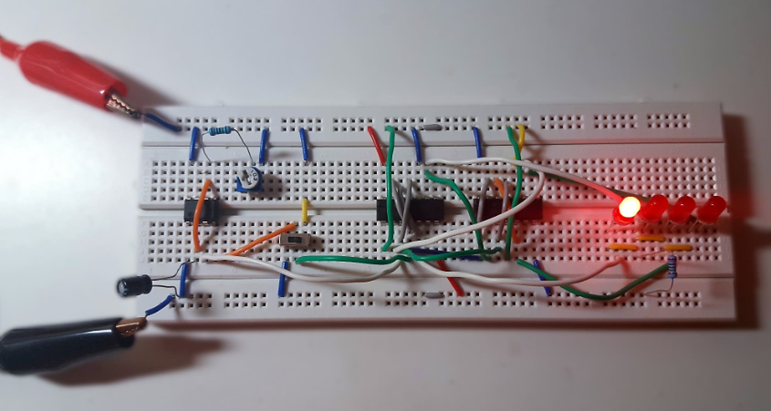
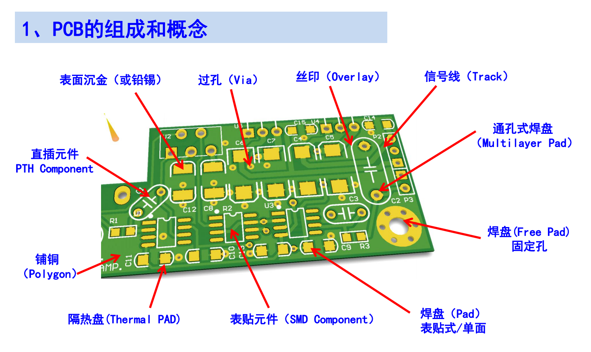
这张图可以直观看出插装元件与贴片元件的区别
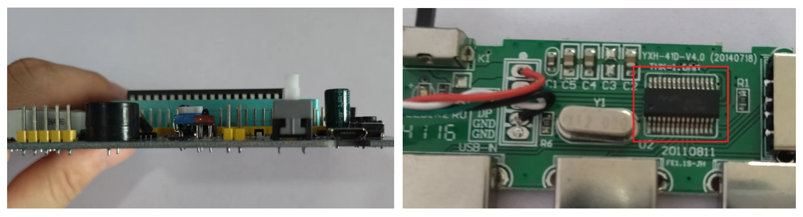
电路板上的布线也是有考量的，比如遇到某个焊点和想要连接的另一个焊点之间已经存在一条导线，你总不能穿过这条线直接把四个点联通吧，所以就需要在一条线的两侧打过孔，从电路板的另一面走线，下图现实的就是过孔在 PCB 板中到底是怎么穿过去的
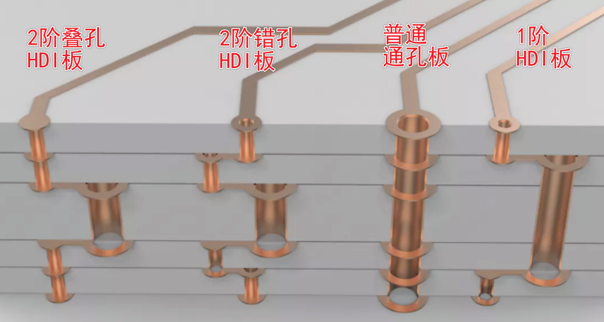
不同的封装方式
封装方式千奇百怪各式各样，但是对于我们最重要的是引脚是否暴露在外面，是否能够使用编程器或者飞线提取固件、接入调试，因此简单介绍几个
DIP双列直插：适合在PCB上穿孔焊接，操作方便；封装面积与芯片面积之间的比值较大，体积也较大
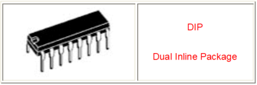
SOP双列表贴：比同类的DIP封装的减少约30-50%的空间，厚度方面减少约70%。和DIP封装有相同插脚引线

BGA球栅阵列封装：信号传输延迟小，适应频率提高，可靠性提高，焊点都在芯片下面，不会暴露引脚
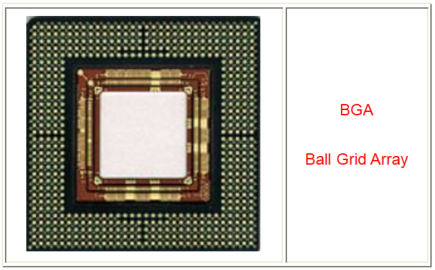
芯片丝印
所谓丝印就是印在芯片上的字符（PCB 丝印同样），可以通过丝印知道这颗芯片是什么型号，从而在网上找到芯片数据手册，确定芯片内存布局、引脚定义等信息
例如这颗芯片上写的 STM32F103ZET6，就可以通过搜索找到其芯片手册为：https://www.semiee.com/file2/fe7e3f634868962fc9d0989881628931/ST/ST-STM32F103ZE.pdf
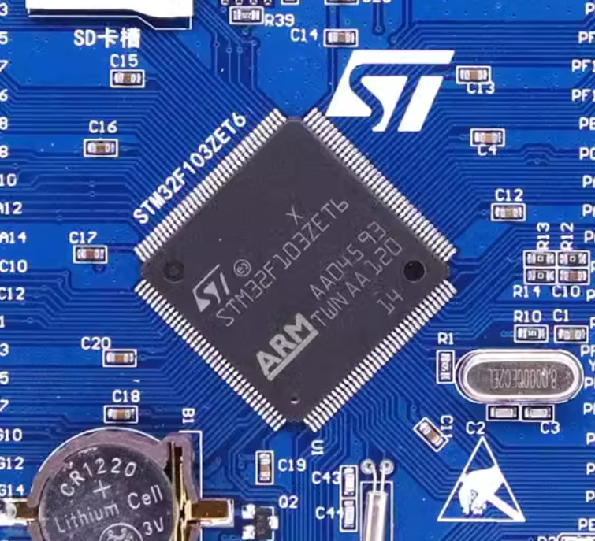
搜索方法：
有一些专门整合各种芯片信息的网站，比如：
如果这些网站查不到可以直接谷歌或百度搜索：xxxx datasheet / xxxx 芯片手册 等信息
Flash/存储芯片
有些芯片为内置 Flash（例如 nRF52840），这种需要通过调试接口进行固件提取，有些芯片内部不会存储用户程序，需要外置 Flash（如 ESP32），这种就可以直接通过编程器提取。一般主控芯片内部能存储的数据比较少的，所以涉及大量数据时也还是要用到专门的外部 Flash 芯片
一些比较常见的存储芯片长这样，前面这些引脚之间还比较宽松
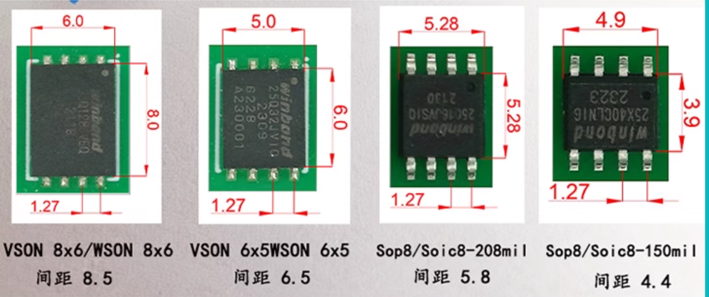
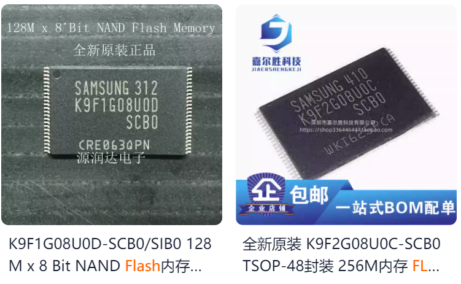
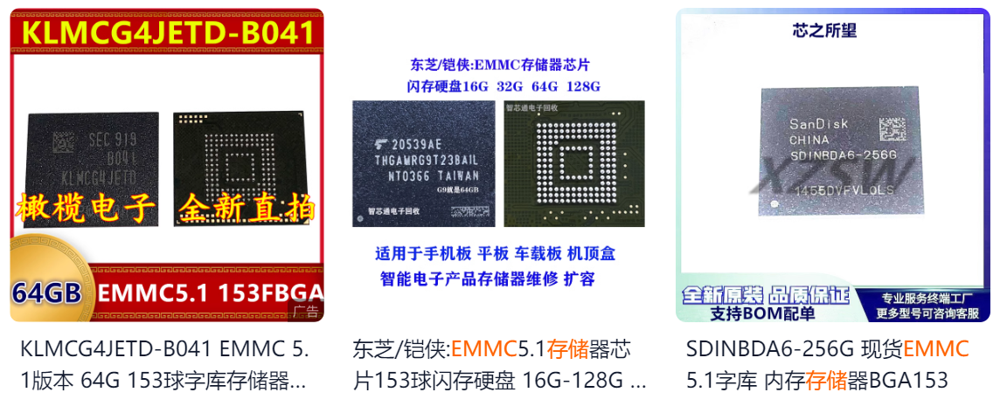
常用工具
螺丝刀撬棒等
搞一个设备应该不会直接就把 PCB 板暴露在你面前，需要自己动手拆解，螺丝刀撬棒属于必备工具
可以在 B 站多看看拆解视频，了解一下各种奇怪的连接方式
万用表
主要用来测量通断、电压
万用表中有一个档位叫蜂鸣档，在这个档位万用表的两根表笔如果是联通的，万用表就会响，告诉你你测试的这两个点是联通的，一般使用这个档位来测试设备的接地（GND），一般设备的金属外壳或者 PCB 板上焊接的模组金属外壳、比较大的焊盘是接地的，将万用表调到蜂鸣档，一只表笔放在这些地方，另一只表笔在焊盘或者芯片引脚按个碰触，如果万用表响了就说明这是接地的
测量电压时调整至电压档，一般测试设备也就3.3v、5v、12v 这么几种，根据实际情况调整一下档位，使用黑表笔怼在刚才测出来的 GND 那里，红表笔触碰想要测试的焊盘或引脚，看显示的数值即可
稳压电源
直流稳压电源，用来对设备进行供电，一般设备供电电压有 1.8V、3.3V、5V、12V 等，稳压电源可以精准的调节供电电压
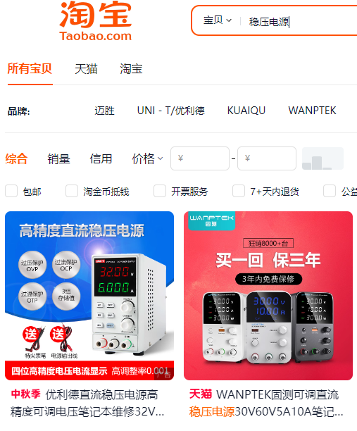
电烙铁及周边
搞硬件难免焊个线、拆个元器件，电烙铁必备，包括什么焊锡丝、高温海绵、助焊膏、洗板水、吸锡线、镊子啥的
烙铁用完了不要直接就放那了，烙铁头氧化了下次用就不沾锡了，用完之后可以给烙铁头上上锡，这样氧化的就是锡而不是烙铁头，下次用加热后直接把锡蹭掉，烙铁头崭新锃亮！
关于焊接的学习可以多在 B 站搜一些视频看看，看多了自然也就知道该怎么操作了，淘宝买点练习板或者拆点废旧电路板多练就是了
贴片元件焊接教程：
热风枪/加热台
拆焊 BGA 芯片必备！热风枪要掌握好风量和温度，别把元器件吹跑了
热风枪使用教程
加热台适用于那种单面的板子，拆焊芯片巨方便，还能双手操作
FlexHolder 柔性探针台
纽创信安 推出的一款便于测试的探针台，可以很方便的使用探针接触焊点从而避免麻烦的焊接，每个探头可接两根杜邦线出来用于连接目标和示波器监视
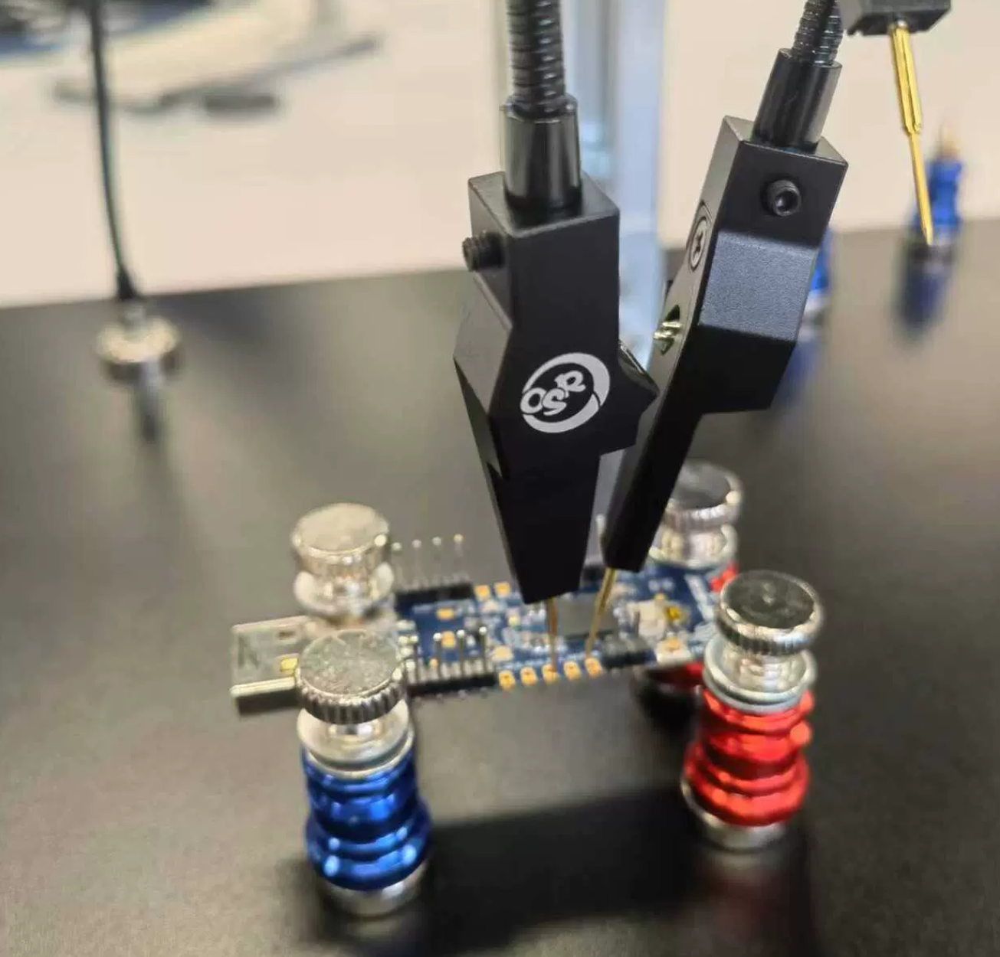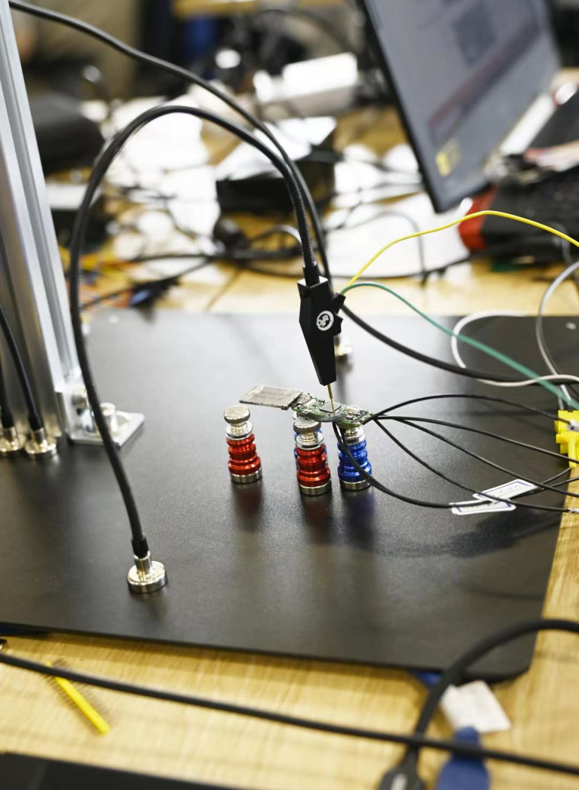
购买链接：
逻辑分析仪/示波器
逻辑分析仪淘宝上有十几块钱的，也能凑合用，主要是拿来抓一下芯片间地通信，配合上位机软件可以直接解析对应协议的数据
简单的逻辑分析仪教程
示波器记录的信号比逻辑分析仪更详细，逻辑分析仪只能记录高低电平，示波器记录是完整的波形，但缺点是记录时间比较短而且巨贵！协议解析能力也比逻辑分析仪差远了，主要是看波形及功耗
Jtagulator
探测 JTAG、SWD、UART 接口的工具，把板子上的可疑引脚接到 Jtagulator 上，通过串口操控 Jtagulator 对引脚进行探测，最终确定引脚功能
大多时候还是直接找数据手册，分析引脚定义找出 JTAG 引脚比较靠谱，除非板子上有比较明显的一排的 JTAG 座，否则用这个测量还是比较麻烦的，比如有些 JTAG 引脚给你接好排座，可能在一些测试点上，你想用这个测试还要自己飞线啥的，飞少了还测不全
PowerShorter 电压短路故障注入
纽创信安 推出的电压短路故障注入设备，体积小巧便于携带，Type-C USB 供电与交互，具有两路短路引擎
脉冲控制精度： 10ns
GPIO输出：2路
继电器输出：1路
固态继电器输出：1路
设备 python 库已开源：https://gitee.com/osr-tech/powershorter

配合 FlexHolder 使用效果更佳
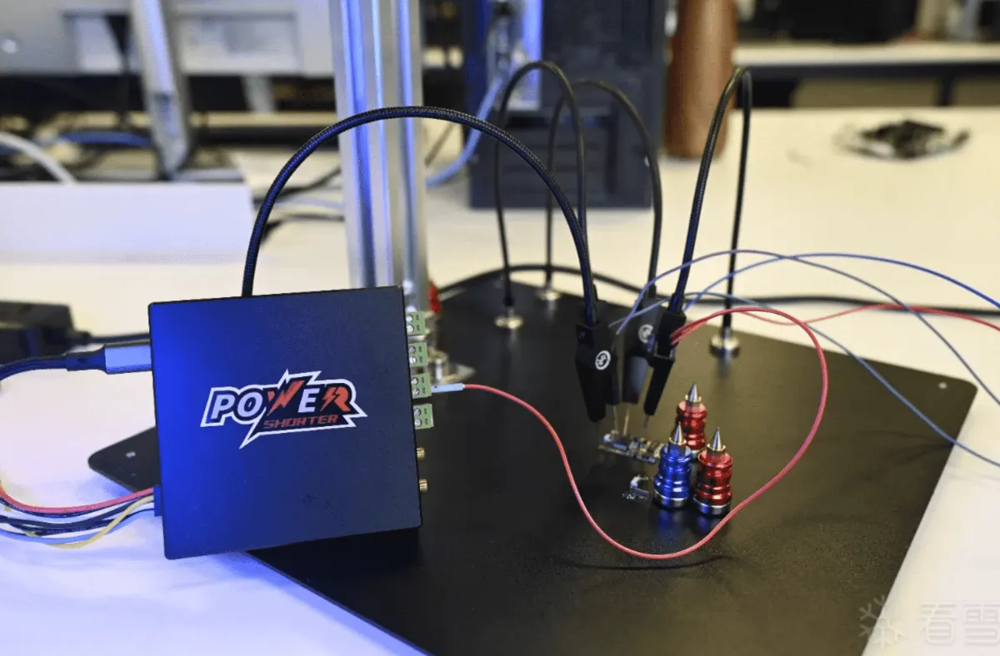
购买链接：
编程器
主要用来提取外置 Flash 芯片中的固件，配合上位机软件，对于其已有的芯片来说连接好引脚直接自动读取
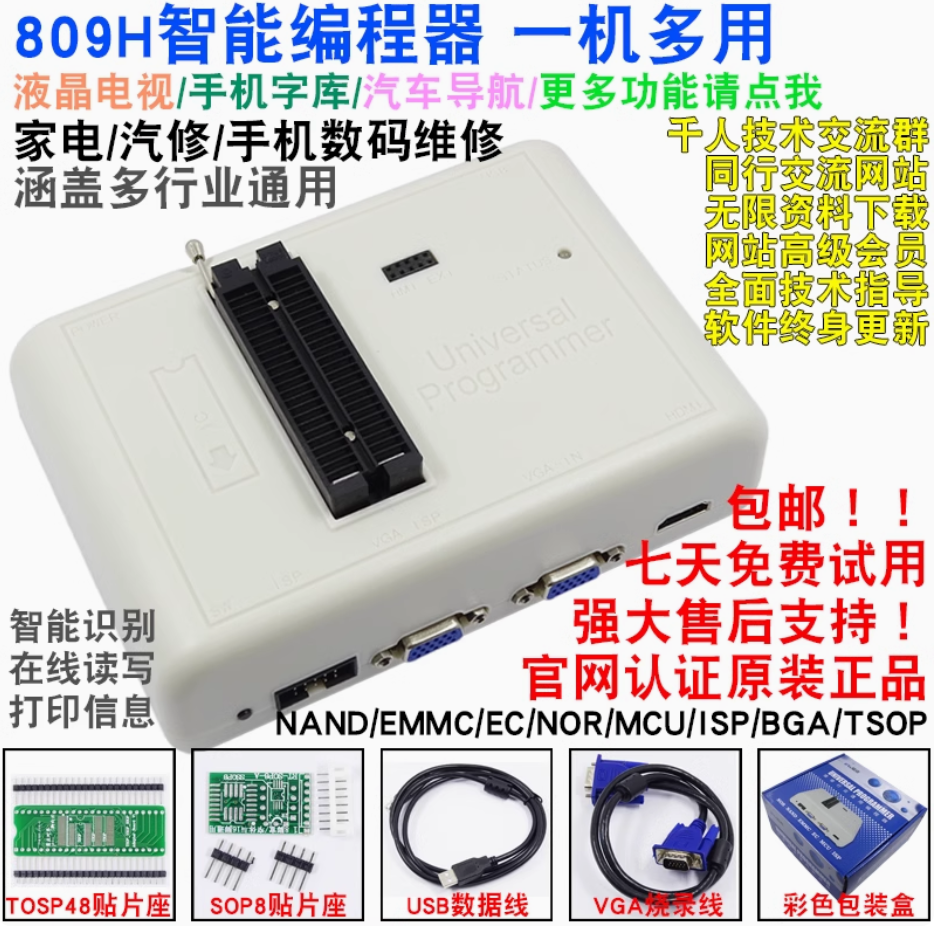
如果你把 Flash 芯片拆焊下来的话可以直接把芯片放到烧录座中，这种方式比较通用，只需要买不同封装类型芯片的烧录座就可以
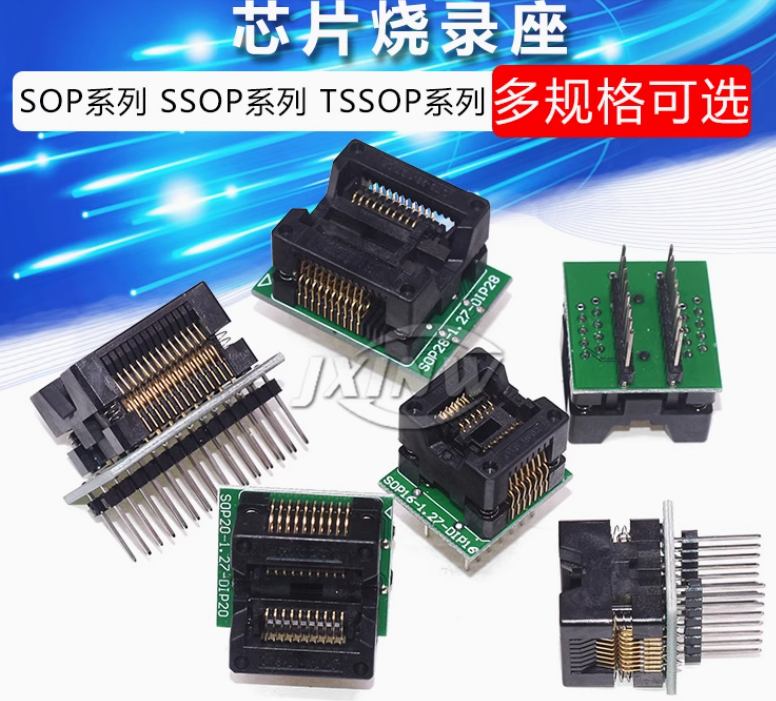
如果不想拆焊芯片，可以配合一些烧录夹连接到编程器，例如对于 SOP 这类的 Flash 芯片
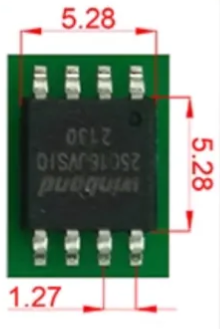
直接用烧录夹夹住，接到编程器自动识别读取固件即可
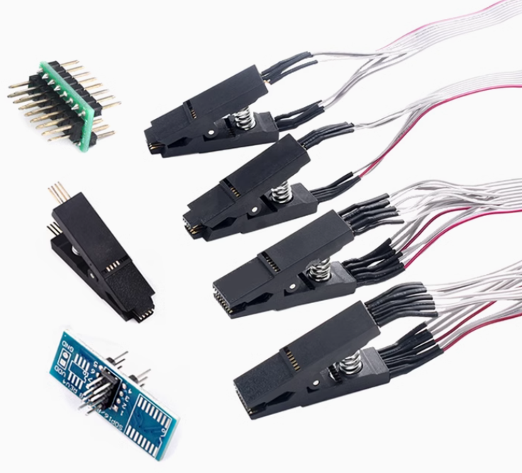
或者用这种直接按下去的烧录针，个人觉得比烧录夹好用
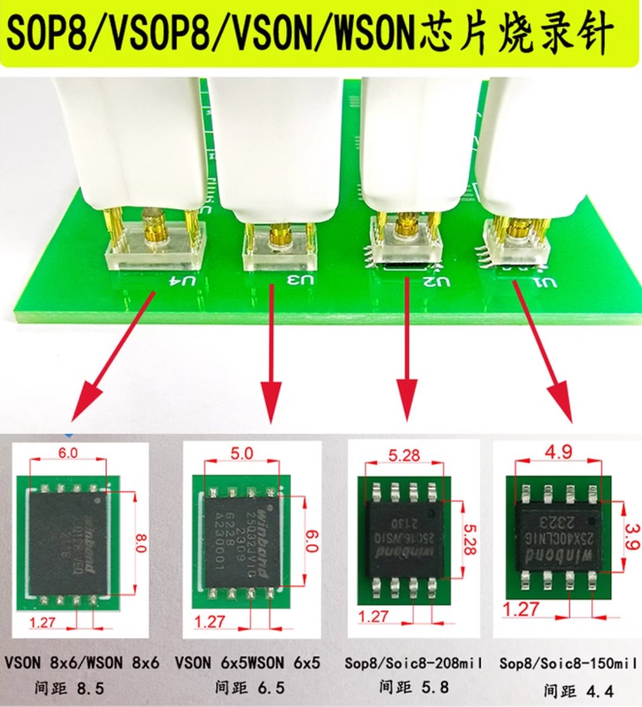
对于 BGA 封装的 EMMC 芯片就只能用烧录座了，引脚没法在外面接触到
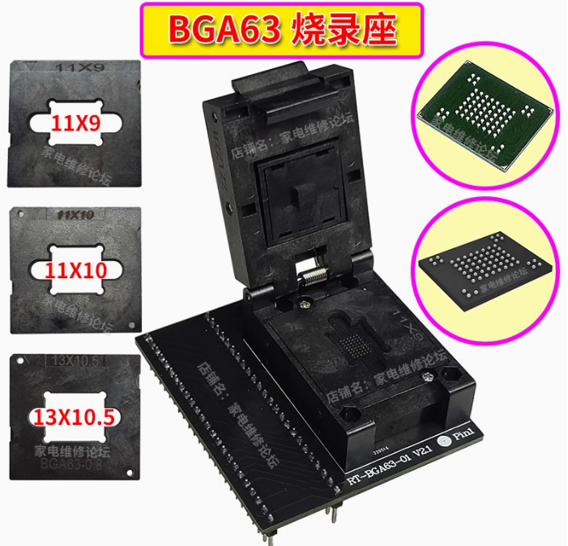
硬件通信接口及利用
UART
通用异步收发器（Universal Asynchronous Receiver/Transmitter）：一般就叫串口
接口定义：TX：数据发送、RX：数据接收
因此两个设备的 TX/RX 是对着接的，我的发送要给你的接收，如下图
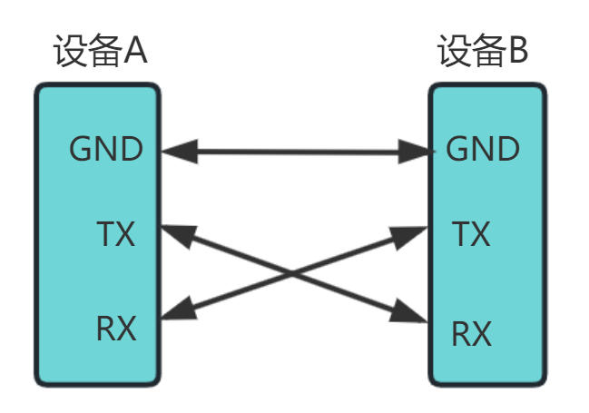
一般在设备上找到串口后会使用 USB 转 TTL 的小板子接上，在电脑上打开串口工具，就可以与目标进行交互啦
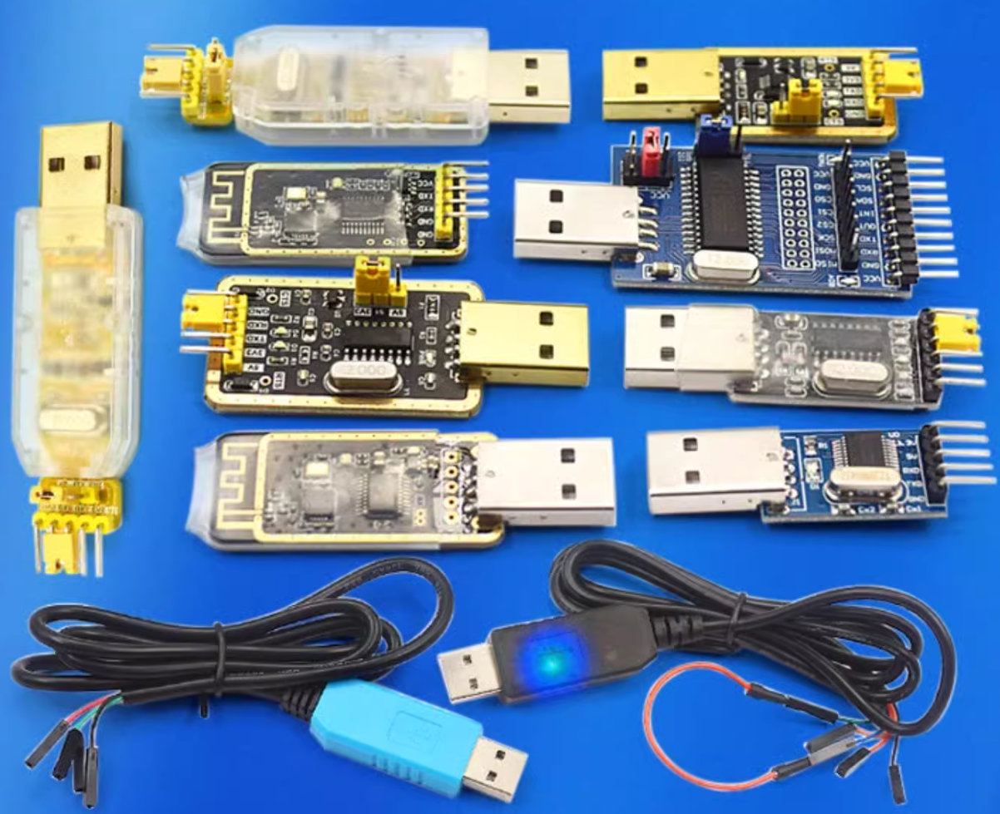
这里说的 USB 转 TTL 实际指的是 TTL 电平，类似的还有 RS232、RS485（具体参考：https://blog.csdn.net/ARM_qiao/article/details/125103127）因此在遇到不同的电平标准时要使用不同的串口小板，可以直接在淘宝搜三合一的板子，一个顶三个
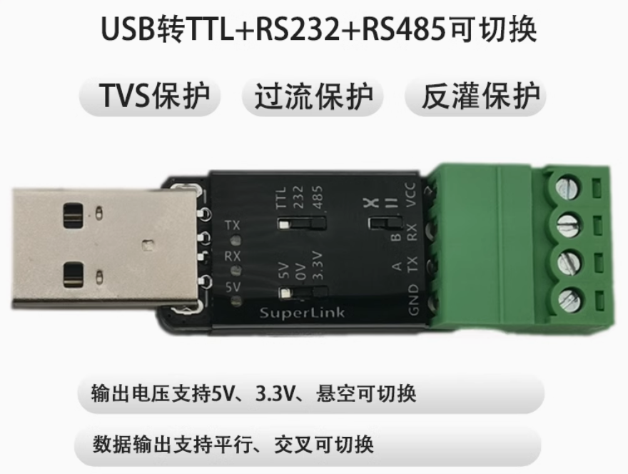
但我实际测试过程中遇到的大部分都是 TTL 电平，只在车的零部件上遇到过一次 RS485
举个实际的例子：
很多路由器会直接将 UART 接口丝印标记在板子上，这可能是三四个相邻的过孔或者排针
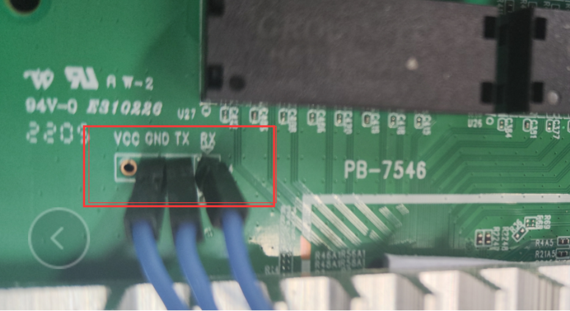
你拿串口小板接到电脑上会发现有些路由器直接就是 Linux 的 root shell，有些需要密码
大部分单片机芯片里面跑的不是嵌入式 linux，所以也没有 shell 这个概念，可能接上 UART 之后可以看看 log 输出，或者开发者自己留下的一些交互功能
JTAG
在嵌入式开发中主要是用来下载固件和调试代码的，对于安全研究来说一大功能就是提取固件，主要有这么几根线：
TMS 模式选择
TCK 时钟
TDI 数据输入
TDO 数据输出
参考这篇文档，使用 OpenOCD 时指定好 interface（调试器）、target（目标芯片）就可以调试或者 dump 固件了：
SWD
SWD 接口在安全研究中的作用和 JTAG 类似，也是用来提取固件和调试的，他主要用两条线：SWDIO（数据线）和 SWCLK（时钟线），SWD 接口是 ARM 公司定义的，因此基本是 ARM 核的芯片才会支持 SWD